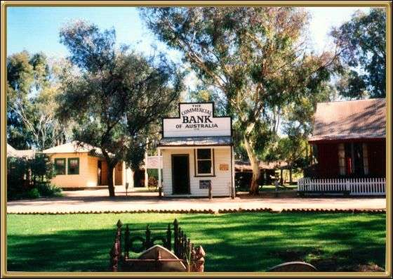

This is the Pioneer Village at Swan Hill, the staff there wear period dress and the town has been created to look much as it did in the 19th century. Apparently the town was named by Thomas Mitchell because of the black swans that kept him awake at night.
Photographer: Jean Stokes